Unit 1: Visibility#
Topics: Brightness/Contrast, colors, accessibility
Motivation#
Microscopy images are data that document a scientific result. To communicate the scientific result in an image figure effectively and truthfully images typically needs to be processed. This processing can go wrong and the image figure can incorrectly present the image (Fig. 2):
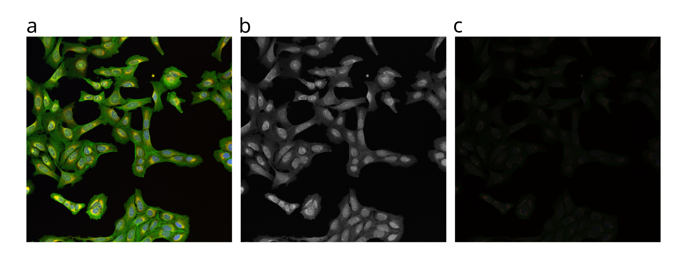
Fig. 2 The same multi channel image visualized in different forms. All fail to communicate the content of the image well. (A) The multichannel image visualized using blue, green, red and yellow look up table. (B) The same multichannel image with all channels visualized in grey scale. (C) Finally, the brightness contrast was processed incorrectly and the image appears dark.#
Key considerations#
Is the information visible?
What do the colors mean?
Is the information accessible to a wide audience?
Important
Another important aspect that we should also consider at this stage is the choice of images. Typically, an image dataset is acquired instead of just a single image. We need to carefully consider the method of how to choose the image represents the result. Acceptable methods to choose a image for a figure could be:
Representative image
Random selection
Based on analysis (middle of distribution)
Show multiple examples of range of phenotype
Introduction#
This tutorial starts with an multi channel image (Fig. 4). Download a TIFF of the example image here: multichannel_image.tif.
Open Fiji…
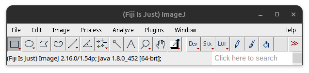
Fig. 3 Fiji task bar#
Then open the image in Fiji:
File > Open… (or drag and drop image into Fiji task bar)
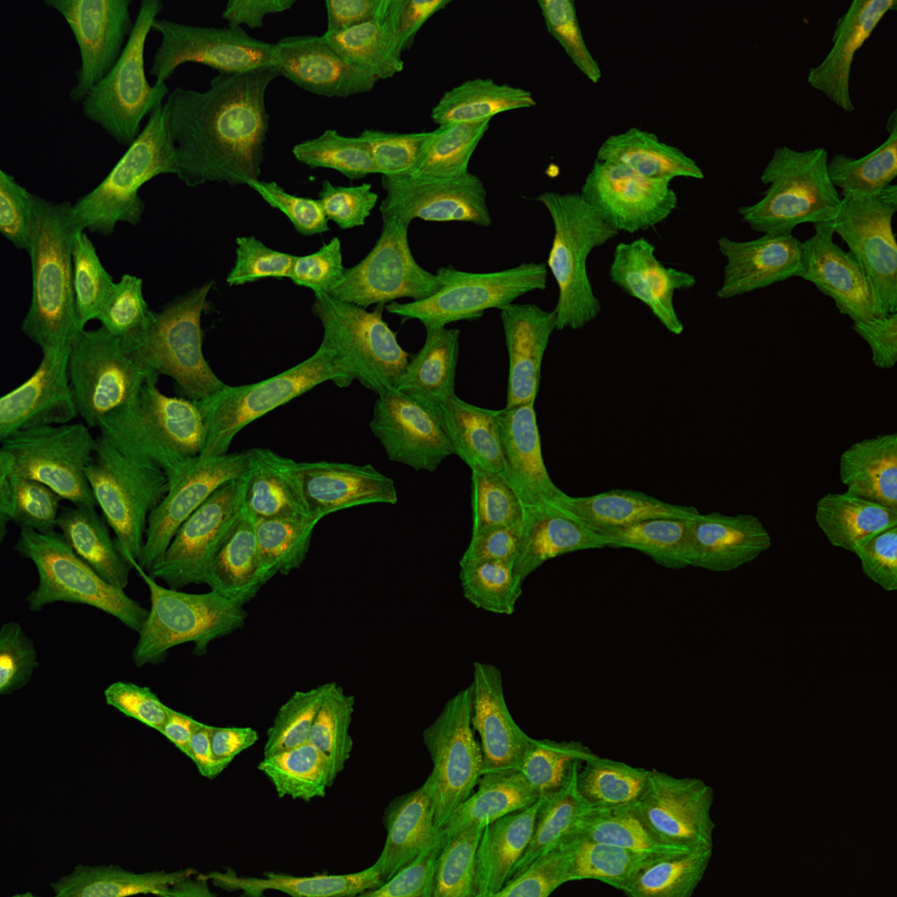
Fig. 4 Multichannel image#
Tip
Work on a copy of the image: Image > Duplicate… (Ctrl + Shift + D)
In order to process individual channels we need to first split the images.
Image > Color > Split Channels

{kind=link}
{kind=link}
{kind=link}
{kind=link}
{kind=link}
Each of the channels encoding different cellular compartments.
Channel |
Image Name |
Cellular Compartment |
|---|---|---|
1 |
C1-multichannel_image.tif |
Mitochondria |
2 |
C2-multichannel_image.tif |
F-actin cytoskeleton, Glogi, plasma membrane |
3 |
C3-multichannel_image.tif |
Nucleus |
4 |
C4-multichannel_image.tif |
Endoplasmic reticulum, Nucleoli, cytoplasmic RNA |
As you can see the images are displayed using different colors. Typically microscopy images are grayscale images and the colors a chosen to make image information easier to understand for humans. The color could for instance communicate different cellular compartments e.g., Nuclues = cyan, cyotskeleton = green.
Note
The images have been acquired using a Spinning Disk Confocal Microscope using a sCMOS camera that acquires grayscale images. Most microscope systems acquire images in grayscale. This is different from natural images (i.e., photography) were different camera sensors are used that produce Red, Green Blue (RGB) images.
Further, each image also has different brightness and contrast settings, thus being more or less visible. Colors as well as the brightness and contrast settings need to be adjusted to visualize the image effectively.
Tip
Fiji allows to record most processing steps that are carried out, including the settings using the macro recorder. This can be used to create a script to automatically process multipe images but could also be used to document the processing.
Record used functions and settings: Plugins > Macros > Record…
Colors#
The colors are part of a Look up tables (LUT) that assign specific color values to the pixel values. One can change the color LUT for each image using:
Image > Lookup Tables
For the image figure of the example image we want to visualize channel 1 (mitochondria), channel 2 (cytoskeleton), and channel 3 (nucleus). Here we choose the following color scheme:
Channel |
Cellular Compartment |
LUT |
|---|---|---|
1 |
Mitochondria |
Magenta |
2 |
F-actin cytoskeleton, Glogi, plasma membrane |
Green |
3 |
C3-multichannel_image.tif |
Nucleus |
Important
For color choice consider that a part of the population is color blind (e.g., red - green bindness). Also consider the different visibility of different colors on different backgrounds, for instance dark blue is hard to perceive on black background, better could be a cyan LUT. Thus, LUTs combinations should be used that visualize images well and for a broad audience. In our experience the combination magenta, green and cyan works well.
Channel 2 presents already in the green color LUT, defined by in the microscope settings and part of the image metadata. To channel 1 and 3 we can apply the color LUT like so:
Select image: C1-multichannel_image.tif
Image > Lookup Tables > Magenta
Select image: C3-multichannel_image.tif
Image > Lookup Tables > Cyan
{kind=link}
{kind=link}
{kind=link}
Important
Since the perception of the information in the image is influenced by the color choice we recommend to include gray scale images at least in the supplements.
Tip
For these grayscale microscopy images it is important to choose appropriate color LUTs (e.g. linear color range) that communicate the image information effectively (e.g., good visibility,).
Color choice can also be based on conventions in the field (e.g. Nucleus = Cyan, Membrane = Magenta, Cytoplasm = Green). Alternatively colors can also correspond to the used flurophore (e.g. DAPI = Cyan, Green fluorescent protein (GFP) = green, red fluorescent protein (RFP) = magenta).
The color LUT can also be inverted to visualize the information better: Image > Color > Invert LUTs
Brightness and Contrast#
Images vary in visibility depending on their brightness and contrast settings. This is because the intensity range (i.e., pixel or gray values) of images typically acquired using microscopes (e.g., 16-bit images have 65,536 unique values) is much larger than the intensity range that can be displayed on computer screens or even the intensity range that the human eye can perceive (i.e., closer to 8-bit or 256 unique values). Thus, the available intensity range must be adjusted. In Fiji this is achieved using the Brightness/Contrast setting.
As you can see in our example images in some panels the information is not well visible.
Select image one of the channels: C1-multichannel_image.tif
Image > Adjust > Brightness/Contrast… (Ctrl + Shift + C)
{kind=link}
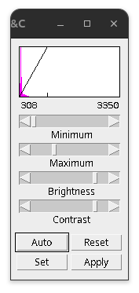
Fig. 15 Brightness/Contrast setting#
Brightness/Contrast interface:
Minimum slider: Selected value (shown left) will be set to black in display.
Maximum slider: Selected value (shown right) will be set to white in display.
Brightness slider: Moves the display range and adjusts image brightness.
Contrast: Increases or decreases the displayed range to adjust contrast.
Auto: Saturates the image by 0.35% steps.
Reset: Sets the display to the min and max values in the image or 0-255 for 8-bit.
Set: Input fixed values, useful for making comparisons
Apply: Histogram strechin using the set min & max. Caution: not reversible!
In my experience the only setting that needs to be regularly adjusted is the maximum intensity slider to make the information in the image better visible. Often cycling through a number of “Auto” settings and observing the effect on the visualization can generate good display settings. Typically the default minimum setting is set to the lowest intensity value present in the image and good enough.
Important
Do not cut off information in the lower intensities e.g., removing structures close to the background to make the images prettier. Avoid oversaturation of large parts of the image.
The Brightness/Contrast setting is a powerful setting that can drastically alter the visualized information of the image. For demonstration purposes here a couple of examples how the same content can be visualized.
{kind=link}
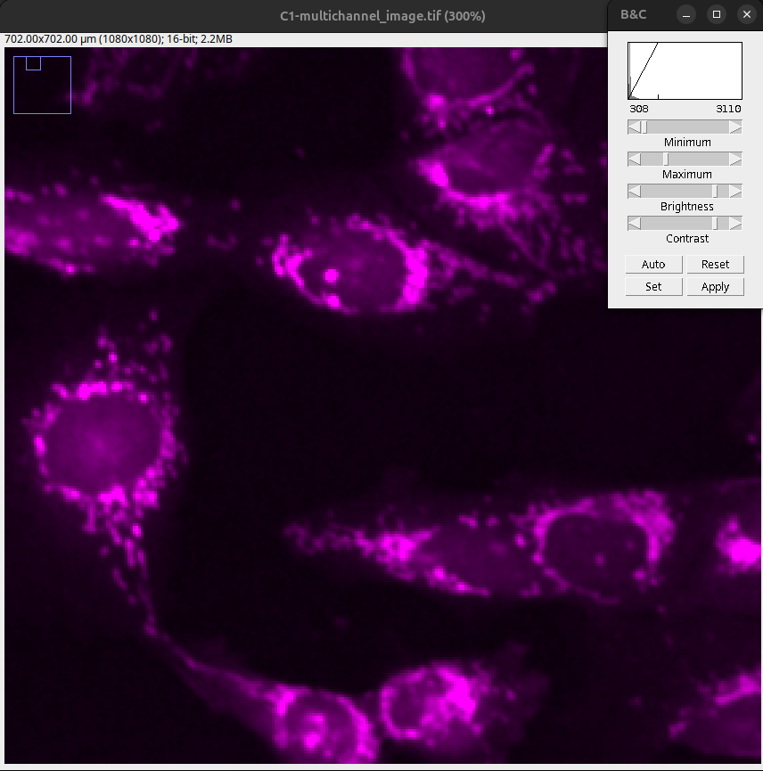
Fig. 16 After first auto setting: 0.35% of image saturated. The objects (mitochondria) are visible and separated. Low intensity information is present.#
{kind=link}
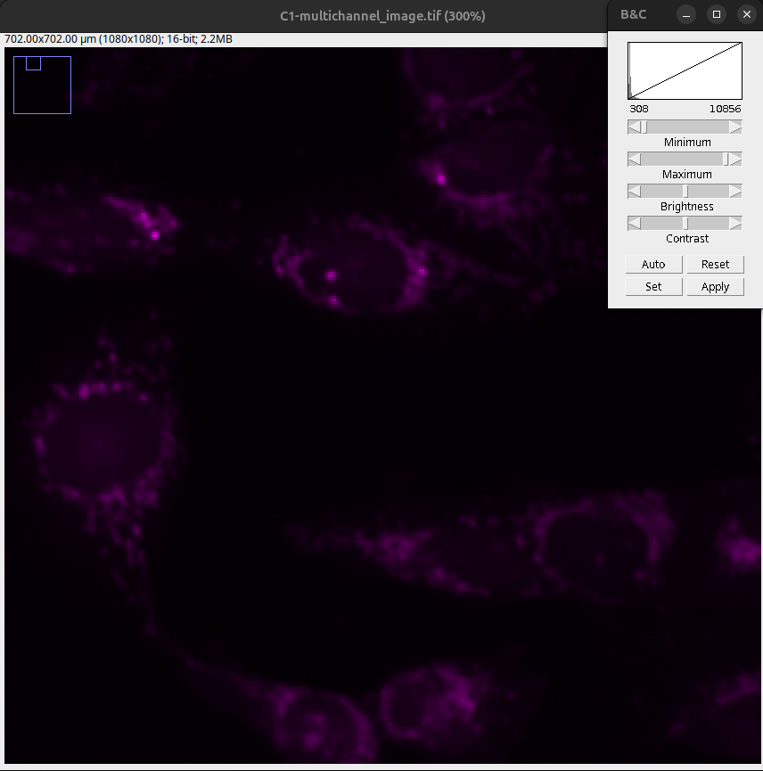
Fig. 17 After pressing reset, the Min & Max sliders are set to the minimum and maximum intensity values. As a result, the objects are not clearly visible.#
{kind=link}
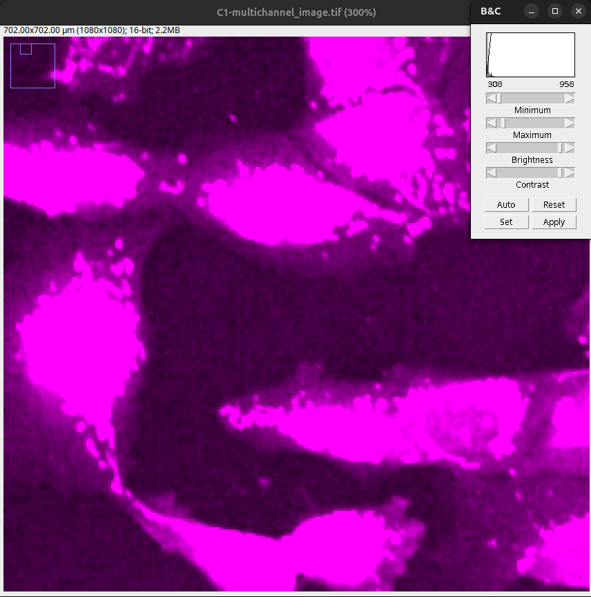
Fig. 18 Saturated image: Note that the objects are completely merged and the low intensity structures appear in the same intensity as the objects.#
{kind=link}
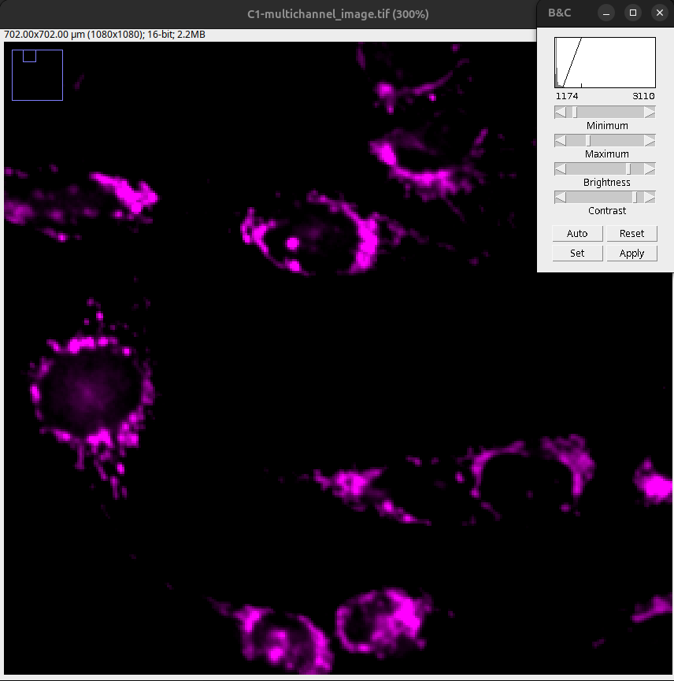
Fig. 19 Background cut too much: Note loss of lower intensity information.#
Adjust the maximum slider or press “Auto” until the objects are well visible and still clearly separated as overstaturation leads to a loss of resolution.
{kind=link}
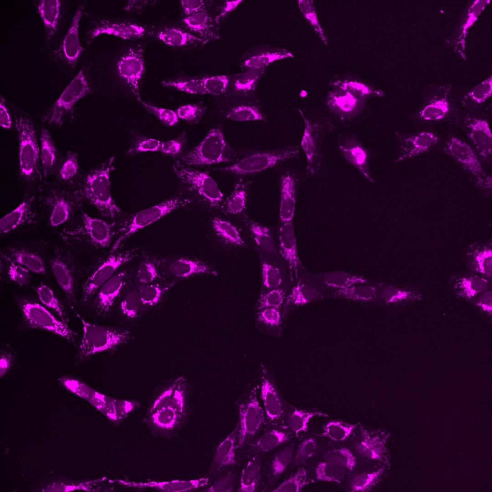
Fig. 20 Channel 1: Min = 308; Max = 2484#
{kind=link}
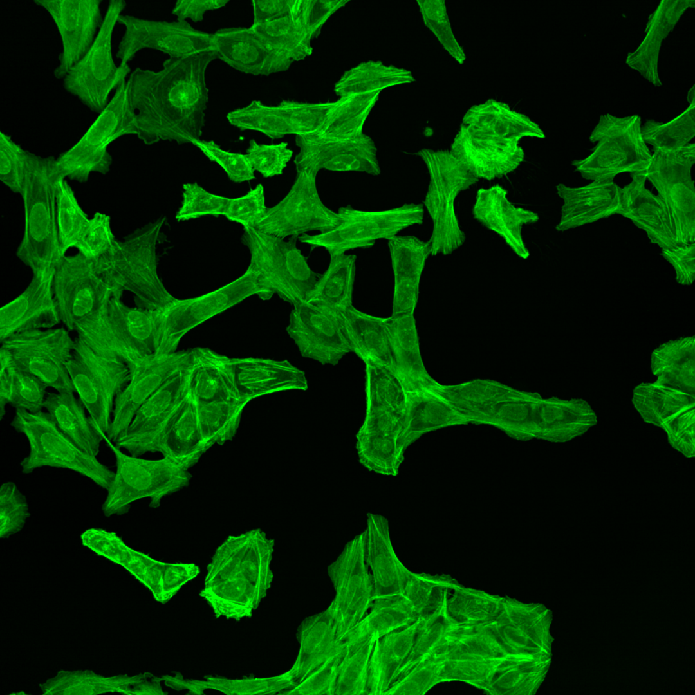
Fig. 21 Channel 2: Min = 84 Max = 2965#
{kind=link}
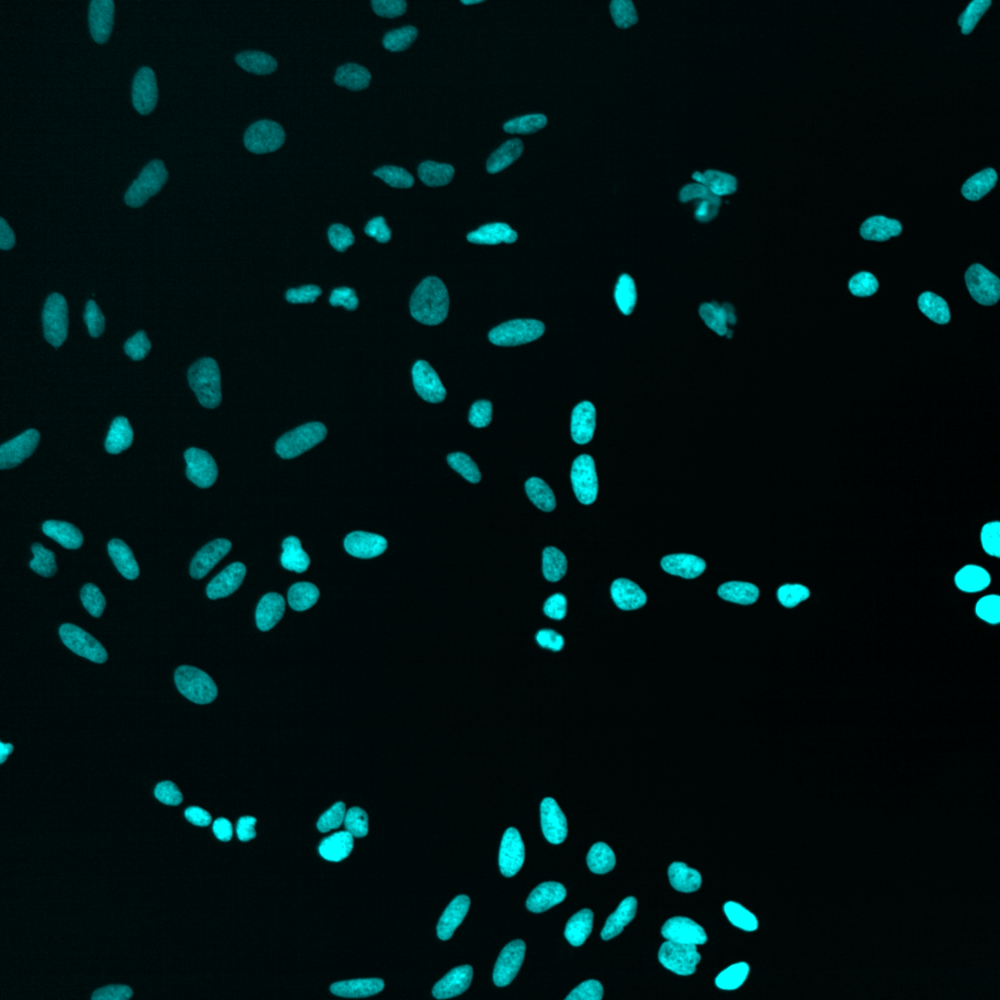
Fig. 22 Channel 3: Min = 36; Max = 1270#
The information of the image is now clearly visible in the display without large loss of data (i.e., loss of low intensity information or oversaturation).
Important
For correct qualitative comparisons it is vital to apply the same min & max values on all the images that are compared.
For multichannel images the same settings across the channels might not be feasible as the signal might have a different intensity distribution. Important is to use the same settings on the equivalent channels in the images that one wants to compare.
Since the Brightness/Contrast setting can alter the visualized information so drastically we recommend:
Orginal images are provided for image figures (i.e., via image repository).
Minimum and maximum settings are recorded in the methods.
One can also provide a calibration bar next to the image. This is particularily useful if the intensity values are calibrated (i.e., photon count not arbitrary units). In Fiji a calibration bar can be produced like so:
Select image one of the channels: C1-multichannel_image.tif
Provide calibration bar: Analyze > Tools > Calibration Bar…
{kind=link}
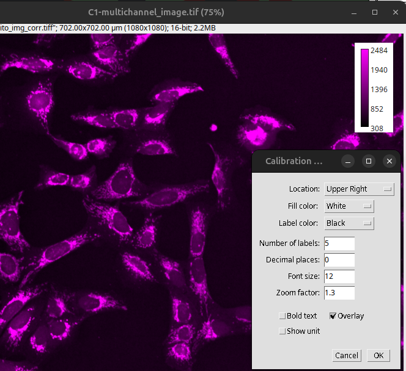
Fig. 23 Calibration bar#
Important
Applied Brightness/Contrast adjustments or in general bit depth reduction (e.g., 16-bit converted down to 8-bit) represent a loss of information! Such images should in general not be used for quantitative image analysis. In particular intensity quantification must not be performed on such images.
Create merged image#
After color and brightness is adjusted the three adjusted images can then be combined into a merged image.
Image > Color > Merge Channels…
Assign then the correct channels and LUTs select “Create composite” and then press OK.
{kind=link}
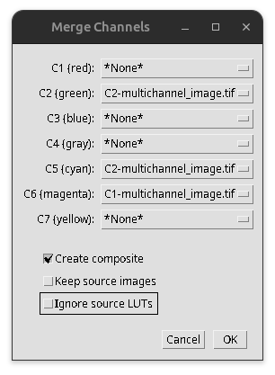
Fig. 24 Merge channels#
Tip
As you can see you can also use the merge channels tool to assign the LUTs. Here you would then select the correct channel/LUT combination select “ignore source LUTs” and then press OK.
The image then gets merged into a composite image (i.e., all channels are still sparate images). Note the slider at the bottom of the image that still allows you to select different channels.
{kind=link}
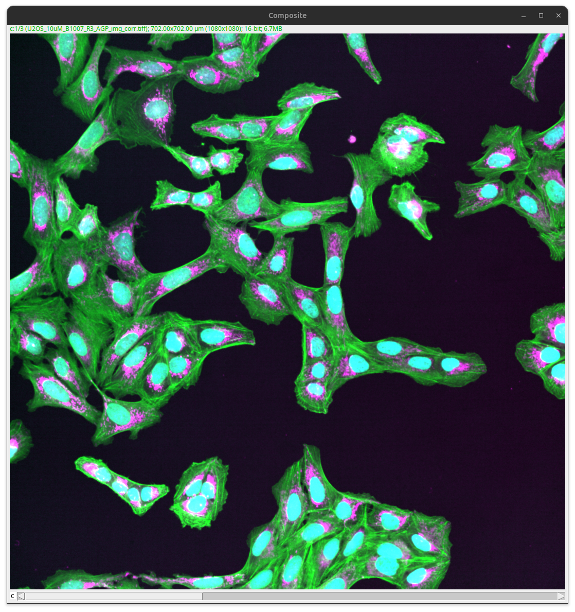
Fig. 25 Composite image#
Download a TIFF of the result image here: composite.tif.
Note
Merging more than three color channels into a single image is tricky, as the different combined colors might not be easily distinguished anymore by eye. Except the objects are well separated, which is often not the case for biological information. Thus, we in general recommend to visualize more than 3 channels separately, ideally using gray scale images.
Bonus: Macro recorder#
The macro recorder allows to document the processing steps that are carried out in the graphical user interface (GUI).
Important
Some GUI interactions are not recorded! For instance adjusting the minimum or maximum slider is will not present in the recorded macro. This would only be present if done via the “Set” button.
The recorder can be started:
Plugins > Macros > Record…
A text window appears that now documents most GUI adjustments.
{kind=link}
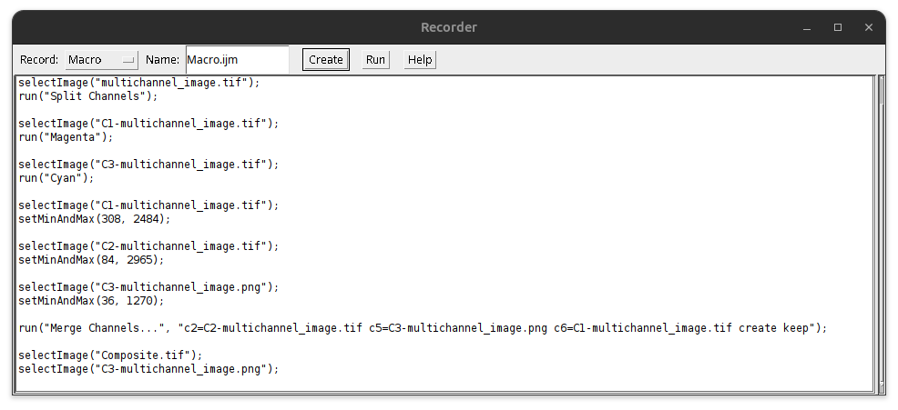
Fig. 26 Macro recorder#
Tip
Typically one tries different settings on the image. You can go to the Recorder and modify the recorded commands.
The final recorded macro documents the processing that has been performed. Press the button “Create” to creat the macro and save it:
File > Save As…
Save as .ijm Fiji macro.
{kind=link}
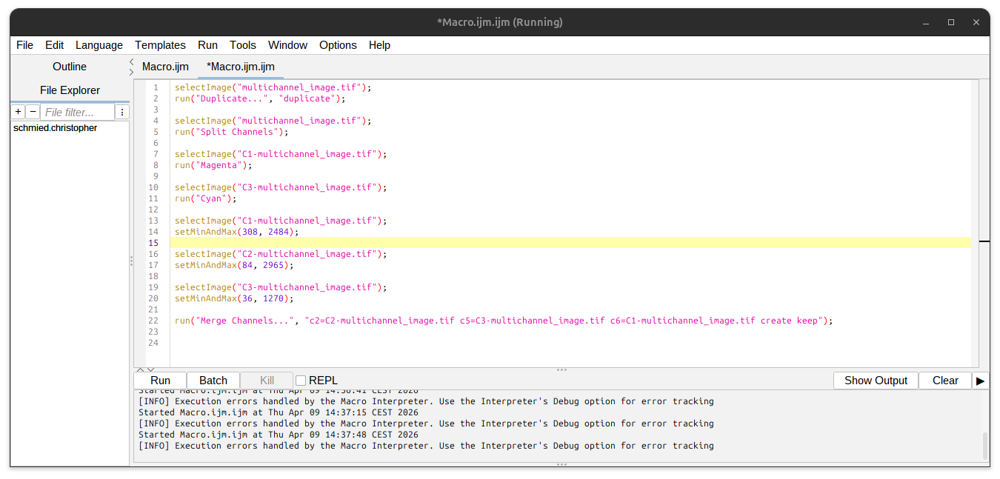
Fig. 27 Macro script#
The cool thing is then by pressing “Run” one can reproduce the entire processing. Even cooler is then to fully automate the processing on all your images by doing some simple macro programming. You can download the macro example to test it Macro.ijm.
Note
For the macro to work the “multichannel_image.tif” image needs to be open under this exact name in Fiji.